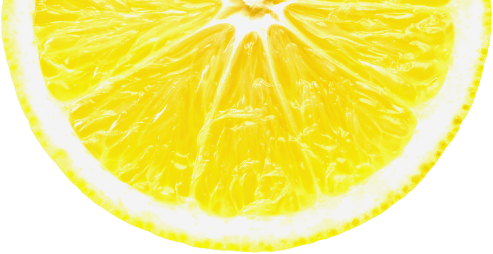

Restaurant
레몬연어샐러드 레몬딜버터 레몬크림새우 레몬오이피클
레몬연어샐러드
재료
연어 · 바질가루 · 튀김가루 · 올리브유 · 각종 채소 · 버터 · 물엿
레시피
① 연어 껍질 손질 후, 소금과 바질을 뿌려준다.
② 튀김가루를 살짝 입힌 뒤에 올리브유에 노릇노릇 구워준다.
③ 구워진 연어는 키친타올에 놓고 살짝 기름기를 빼준다.
④ 샐러드 채소는 얼음물에 담궈 준다.
④ 레몬 반으로 잘라 반은 레몬즙으로 사용하고,
나머지는 0.5cm 두께로 썰어준다.
⑥ 버터, 레몬즙, 올리고당을 함께 끓이고 얇게 썬 레몬도 넣어 레몬소스를 만든다.
⑦ 소스와 채소, 연어를 올리면 샐러드 완성!
레몬딜버터
재료
레몬제스트 1개 · 레몬즙 1큰술 · 가염버터 200g · 딜 10g
레시피
① 레몬은 물로 씻은 후 베이킹소다와 소금으로 한번 더 씻어 준비한다.
② 레몬의 노란 부분만 제스트로 갈아준다.
③ 레몬즙을 짜 체에 걸러준다.
④ 딜은 흐르는 물에 가볍게 씻은 후 식촛물에 담가둔다.
④ 담가둔 딜을 물기를 제거해 잎 부분만 곱게 다져준다.
⑥ 상온 버터와 레몬즙을 섞어준다.
⑦ 그 후 레몬제스트와 딜을 넣어 섞어준다.
⑧ 유산지로 모양을 잡아 냉동하면 레몬 딜버터 완성!
레몬크림새우
재료
새우 · 레몬 · 계란 · 튀김가루 · 마요네즈 3T · 우유 4T · 꿀 2T · 레몬즙 1T
레시피
① 칵테일 새우를 흐르는 물에 살짝 헹군 뒤 소금과 후추로 밑간을 한다.
② 전분과 물 1/2컵을 넣고 계란과 섞어 새우에 뭍혀 튀긴다.
③ 마요네즈, 우유, 꿀을 냄비에 넣고 살짝 끓을 때 까지 가열한다.
④ 새우튀김을 접시에 담고 레몬크림 소스를 뿌려준다.
④ 레몬크림새우 완성!

레몬오이피클
재료
오이 3개 · 레몬 1개 · 파프리카 1개 · 물 2컵 · 식초 1컵 · 설탕 1컵 · 청양고추 2개 · 통후추 16알
레시피
① 오이는 굵은 소금으로 문질러 씻어준다.
② 씻은 오이를 4cm 정도로 잘라준 후 한토막을 다시 4등분으로 잘라준다.
③ 레몬은 끓는 물에 소독해주고 굵은 소금과 베이킹소다로 꼼꼼하게 세척해준다.
④ 씻은 레몬은 슬라이스해주고 파프리카도 작게 썰어준다.
④ 소독한 유리병에 준비한 재료를 모두 섞어 담는다.
⑥ 배합초 재료를 모두 냄비에 담아 한소끔 끓여준다.
⑦ 배합초가 뜨거울 때 바로 유리병에 담아준다.
⑧ 뚜껑을 연채로 식혀준 후 하루정도 냉장보관하면 레몬 오이 피클 완성!